Aprende a meditar y despierta tu mente: 129 meditaciones guiadas y 17 mundos inmersivos en español para dormir, respirar y calmarte, con un dragón compañero y un diario de tu evolución. Todo funciona sin conexión una vez descargado, y es 100 % gratis.
Las meditaciones se basan en técnicas de algunos de los mejores expertos en meditación, con un objetivo claro: que avances de verdad. Lecciones ilustradas, bibliotecas y muchísimos ejercicios sobre temas muy variados, para todos los niveles: puedes empezar desde cero o partir de un nivel intermedio hasta convertirte en experto. Y si no buscas aprender nada, esta app también es para ti: déjate llevar por mundos maravillosos y momentos de belleza y paz. 100 % gratis, sin anuncios, sin cuenta y sin datos recopilados.

De los primeros pasos al nivel experto, con técnicas de los mejores maestros: dormir, respiración, calma, atención plena, visualización… Cada categoría es un universo, con su ilustración, su voz y su ambiente.

Ocho sesiones para sentar las bases: escaneo corporal, respiración, pensamientos, cinco sentidos, ojos abiertos, primera meditación silenciosa.
8 meditaciones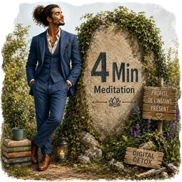
Meditaciones cortas, disponibles sin conexión una vez descargadas: encuentra la calma o recupera tu centro en cuatro minutos.
11 meditaciones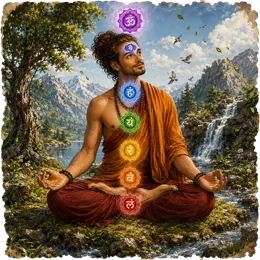
Respiración, chakras, sonidos, relajación profunda y sueño.
14 meditaciones
Amor, gratitud, compasión, perdón — cultivar el corazón interior.
8 meditaciones
Encuentra lo que has evitado, con suavidad.
10 meditaciones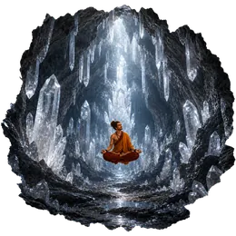
Templos, bosques, montañas, océanos, fuego.
7 meditaciones
Conoce las voces que caminan contigo.
5 meditaciones
Reencuentros, memorias transgeneracionales, acceso a los anales: el viaje hacia lo que nos trasciende.
3 meditaciones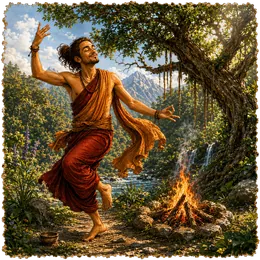
Búsqueda de visión, fuego de los ancestros, círculo de protección, objeto de poder: cuatro viajes de trance chamánico.
4 meditaciones
Tras los pasos de los bodhisattvas: sabiduría, compasión y claridad.
8 meditaciones
Manos cálidas, pequeña circulación, árbol inmóvil: el cuerpo en movimiento interior.
4 meditaciones
Entrenar el ojo interior: ver, oír y tocar en la imaginación.
6 meditaciones
Un viaje completo en una sesión: un lugar, una época, una historia.
4 meditaciones
El punto entre las cejas, la imagen que aparece sola, el mandala que se construye.
5 meditaciones
Viaja más allá. Estrellas, vacío, la inmensidad interior.
2 meditaciones
Biblioteca infinita, cuerpo dormido y mente despierta, espiral, sueño despierto dirigido, vacío fértil, yo futuro.
7 meditacionesVer las 19 categorías y todas las sesiones →
Guías completas : Mundos inmersivos · Qué es el viaje astral y cómo iniciarse paso a paso · Los 7 chakras · Qué es el qi gong y cómo empezar a practicarlo en casa · Sueños lúcidos · Trance chamánico · Visualización creativa · Guías espirituales · Gestión emocional
Tres categorías dedicadas a técnicas de trance, micro-desapego y viajes astrales — para exploradores.

Siete viajes en trance: descenso progresivo, mundos inferior y superior, vidas pasadas, el contrato del alma, el pasillo de las mil puertas, talentos olvidados.
7 meditaciones
Cinco micro-gestos de separación para practicar antes de cualquier salida completa: el imán del techo, el pequeño desplazamiento, el punto detrás de la cabeza, el tobogán, sentarse fantasma.
5 meditaciones
Once protocolos de salida: flotación, incorporarse, miembros interiores, cuerda, caída imaginaria, objetivo, encuentro, desplazamiento, visión, visualización del doble.
11 meditacionesUn mundo es una meditación inmersiva completa (de 13 a 19 minutos según el mundo) con su paisaje, su luz, sus sonidos y su relato. Descárgalo una vez, y medita sin conexión estés donde estés.

Un templo escondido en lo alto, entre la niebla de las montañas.
Un templo de mármol blanco que flota en el corazón del cosmos.

Un mundo de cristal luminoso y sin fin, en las profundidades de la tierra.
Un tren de luz te lleva a través de la galaxia.

Un mundo oculto en lo más profundo de la Tierra.
Un santuario muy antiguo, oculto bajo el hielo de la Antártida.

Una pequeña isla verde que flota sobre las nubes.
Un jardín japonés tradicional de calma perfecta.
Una ciudad de nácar y coral, en el fondo de un mar cálido.
Un viejo monasterio en la montaña, justo antes del alba.
Una biblioteca sin fin, que flota más allá del mundo.
Un oasis escondido entre las dunas, bajo un cielo lleno de estrellas.

Un árbol sagrado inmenso, unido a toda la vida.

Una antigua ciudad perdida que la selva ha recuperado.
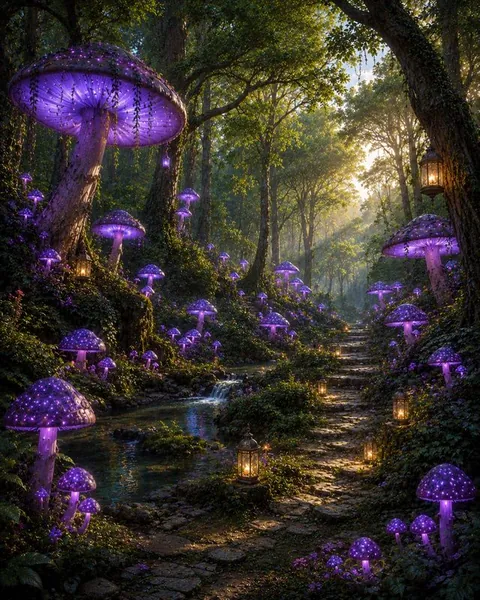
Un bosque onírico, suave y luminoso.
Un mundo de luz blanca y de espejos infinitos.

Un bosque a la luz de la luna, guardado por antiguos espíritus lobo.
El Oráculo, santuarios, diarios, temporizador, alarma: más allá de las meditaciones guiadas, la app se convierte poco a poco en tu cuaderno de viaje interior.
Crea tus lugares interiores — bosque, cueva, templo, isla… — y vuelve a meditar allí.
Anota los guías encontrados en meditación: su tipo, sus mensajes, sus reapariciones.
Los objetos recibidos en viaje interior, guardados y descritos, con su sentido para ti.
Un diario personal estructurado: sueños, gratitud, emociones, señales… y un historial de cada meditación con tus impresiones.
Tu compañero crece con tu práctica (11 etapas) y su isla evoluciona con él — roca, pradera, árbol, cascada, cristal, templo, cosmos.
Sellos para coleccionar: meditaciones, mundos, guías, rachas, insignias de constancia.
Escribe cómo te sientes: el Oráculo baraja y da la vuelta a tres cartas, tres meditaciones elegidas para este momento. Debajo, consejos del día que nacen de lo que escribes en la app.
1 meditación = 1 punto, 1 entrada = 1 punto. La mitad de las meditaciones y todos los mundos son libres desde el inicio; todo se abre a los 40 puntos.
Encuentra una meditación por palabra clave — dormir, estrés, confianza, niño interior, chakra…
Un recordatorio suave cada día o solo ciertos días, a la hora que quieras.
Seis pasos de 0,75× a 1×, tono preservado. Y un ritmo personal para las pausas entre frases.
Sotobosque, olas, torrente, flauta china… grabaciones reales durante la sesión, a tu volumen.
Descubrir →Una biblioteca ilustrada para empezar: postura, respiración, atención, con esquemas en tu idioma.
Descubrir →Descarga tus meditaciones y mundos: después se reproducen sin red.
Las pantallas reales de la app, en un iPhone. Desliza para verlas todas.
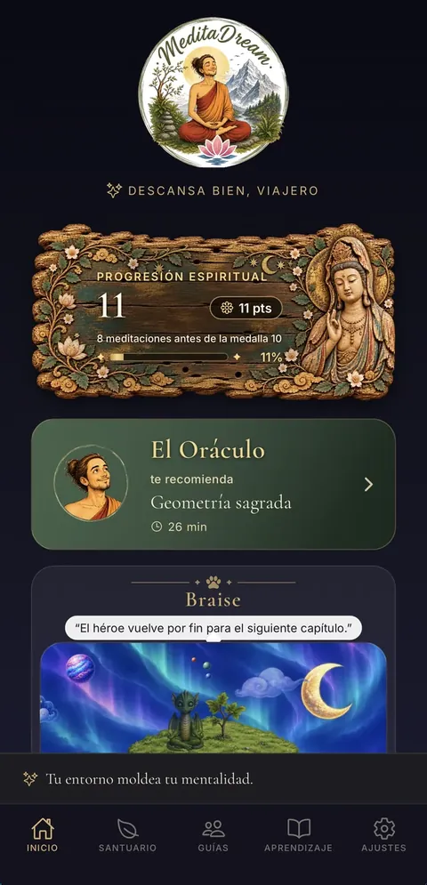
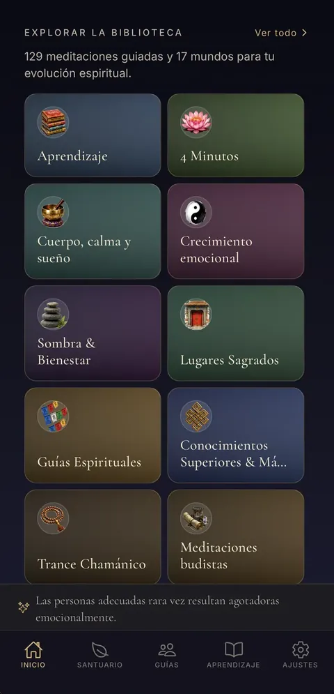
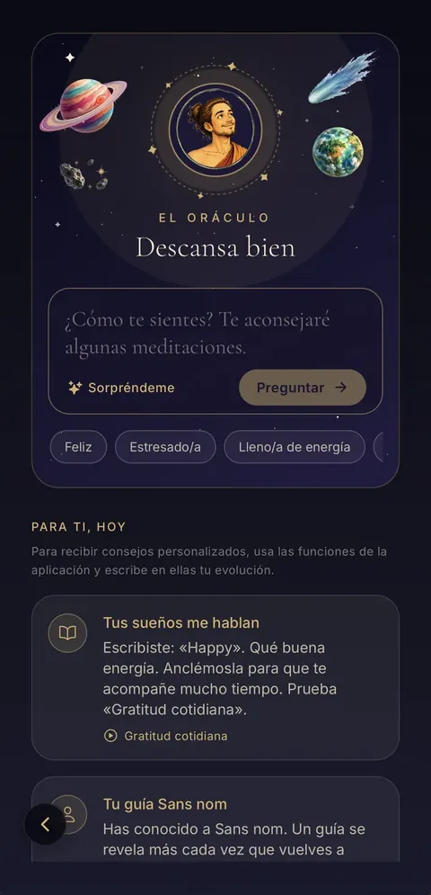
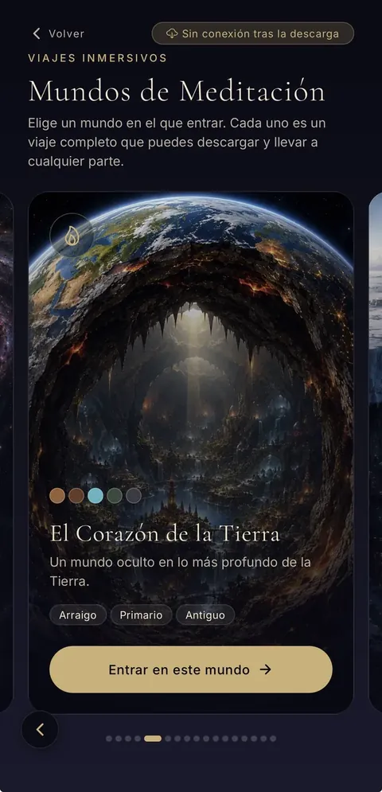
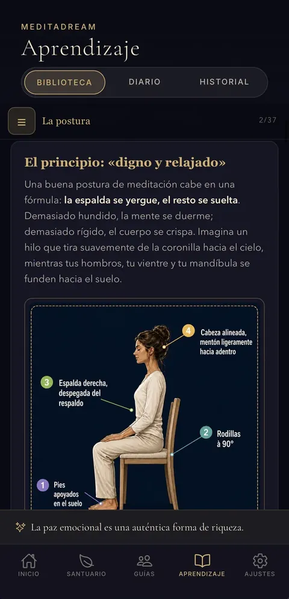
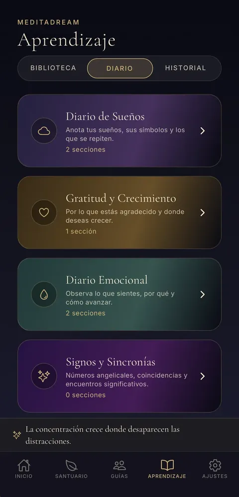
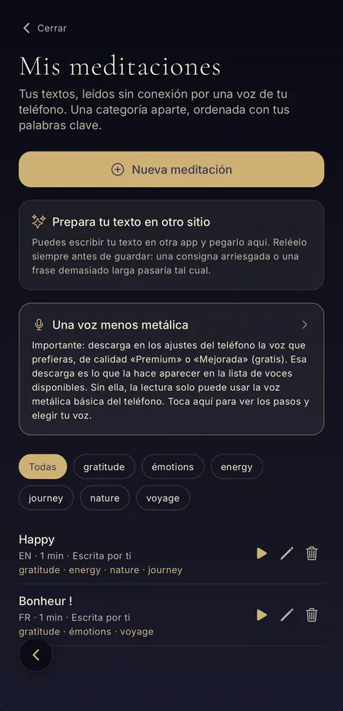
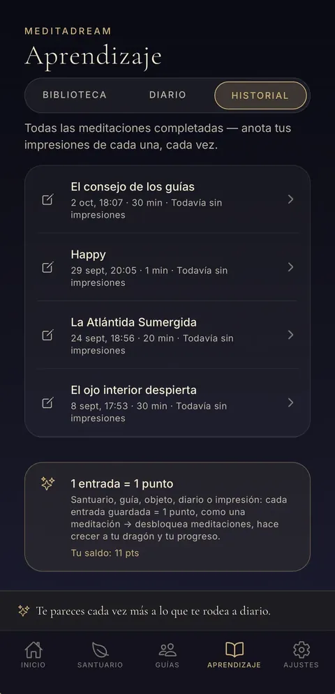
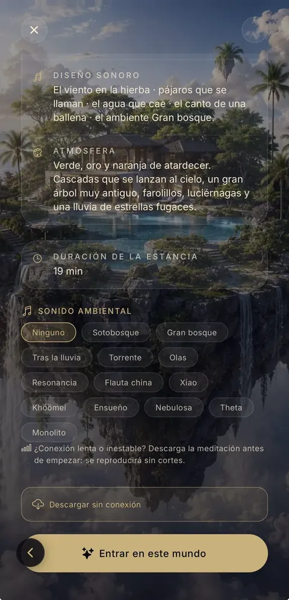
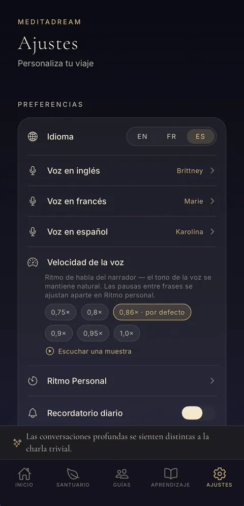
Un recorrido de dos minutos y medio, grabado en un iPhone. Toca un momento para ir directamente.
En el vídeo
Sí, 100 % gratis: sin meditaciones de pago, sin suscripción, sin anuncios, sin compras dentro de la app. La meditación debe ser accesible para todos.
Sí, todas: las 129 meditaciones y los 17 mundos se escuchan en español, con dos voces a elegir.
Sí: cada meditación y cada mundo se descargan una vez y se escuchan en cualquier parte — en el avión, la montaña o el metro. Solo la primera escucha necesita internet. También las sesiones largas, de hasta 41 minutos, y los sonidos para dormir funcionan sin red.
Empieza por la categoría Aprendizaje: postura, respiración y atención, paso a paso, mejor en orden. Elige una voz y un ritmo más lento al principio, y anota cómo te sientes en un diario. El pasaporte zen guarda tus avances. Aprender a meditar con MeditaDream →
Por la noche, en la cama, pon una meditación para dormir de Cuerpo, calma y sueño: algunas terminan sin despertar, para que te duermas mientras escuchas. También puedes poner solo un sonido de ambiente, con un temporizador que lo apaga en fundido tras 5 a 60 minutos. Dormir mejor con MeditaDream →
Cuando sube la tensión, una sesión de la categoría 4 Minutos basta para respirar y soltar el cuerpo, incluso en el trabajo. ¿No sabes cuál elegir? Cuéntale al Oráculo cómo te sientes y te propone tres meditaciones para tu estado de ahora. Reducir el estrés con MeditaDream →
No. Sin registro y sin email. Instalas la app, eliges tu idioma y tu voz, y empiezas tu primera meditación guiada. Tus datos se quedan en tu teléfono.
Sí — toda una categoría de Cuerpo, calma y sueño: meditaciones guiadas para dormir, relajaciones profundas y un diario de sueños para la mañana. → Leer: Meditación para dormir
En las de algunos de los mejores expertos y maestros de meditación: escaneo corporal, anclaje en la respiración, observación de los pensamientos, visualización, bondad amorosa… El objetivo es que aprendas de verdad, con secciones de aprendizaje, bibliotecas y muchísimos ejercicios sobre temas muy variados.
Para ambos. Los ejercicios van desde los primeros pasos hasta el nivel avanzado, y cada meditación indica su nivel. Puedes empezar desde cero con Aprendizaje (postura, respiración, atención, en sesiones cortas) o partir de un nivel intermedio hasta convertirte en experto. → Leer: Cómo empezar a meditar
Entonces esta app también es para ti. Déjate llevar por mundos maravillosos como la Isla Flotante, la Atlántida Sumergida o el Bosque de los Sueños, y disfruta de momentos de belleza y paz, sin ejercicios ni metas.
Gratis en App Store y Google Play. Sin registro, sin suscripción: instalas y respiras.
MeditaDream es una herramienta de aprendizaje y bienestar. No constituye un consejo médico, un diagnóstico ni un tratamiento, y nunca sustituye el acompañamiento de un profesional.
 MeditaDream
MeditaDream